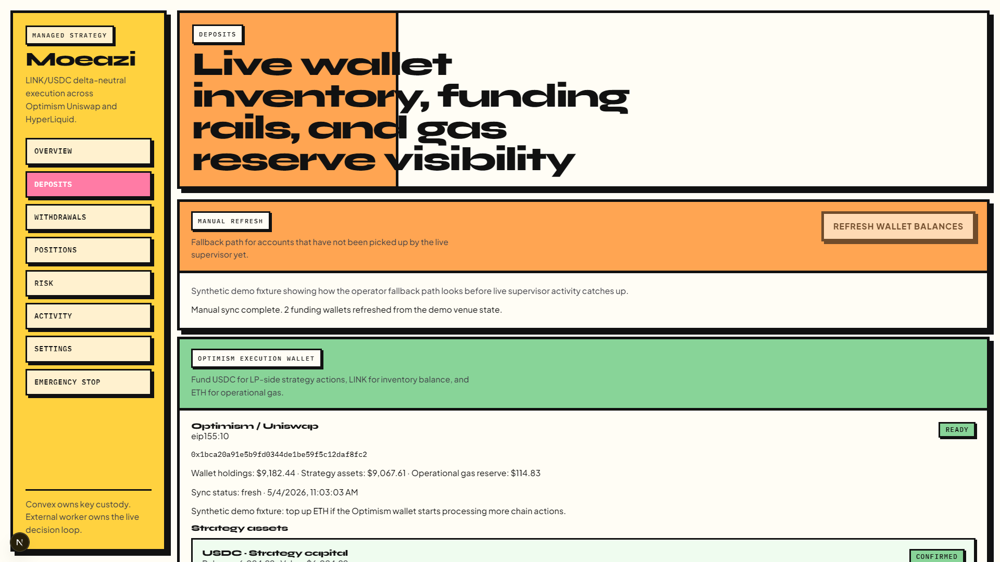
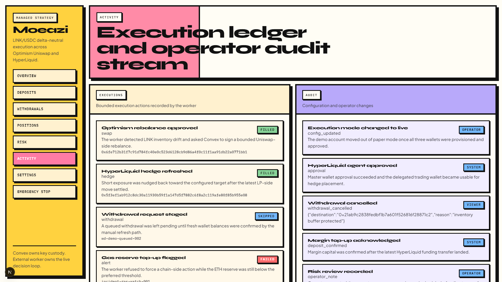
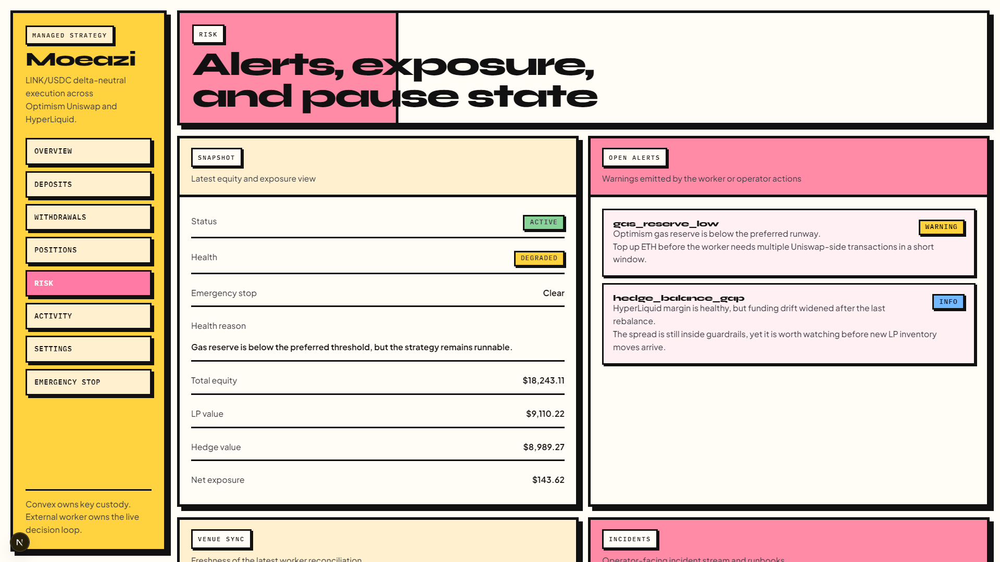
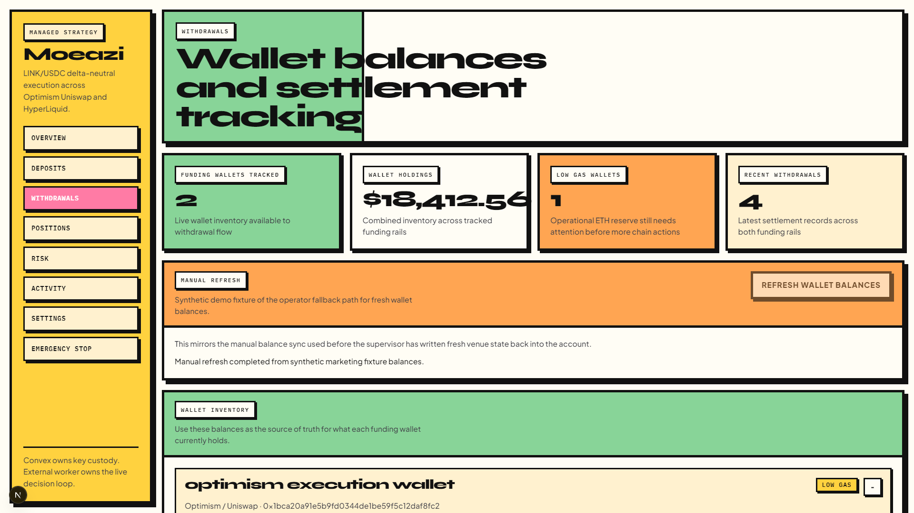

<template id="walkthrough-tour-template">
  <div id="walkthrough-tour" data-composition-id="walkthrough-tour" data-start="0" data-duration="5" data-width="1920" data-height="1080">
    <div class="scene">
      <div class="header">
        <div class="meta">walkthrough tour</div>
        <h2>Deposits, activity, risk, and withdrawals each answer a different operating question.</h2>
      </div>

      <div class="grid">
        <article class="panel deposits" data-layout-allow-overflow>
          <span>deposits</span>
          
        </article>
        <article class="panel activity" data-layout-allow-overflow>
          <span>activity</span>
          
        </article>
        <article class="panel risk" data-layout-allow-overflow>
          <span>risk</span>
          
        </article>
        <article class="panel withdrawals" data-layout-allow-overflow>
          <span>withdrawals</span>
          
        </article>
        <div class="focus-frame"></div>
      </div>
    </div>

    <style>
      #walkthrough-tour { position: relative; width: 1920px; height: 1080px; overflow: hidden; background: #fffdf5; }
      .scene { display: grid; gap: 24px; width: 100%; height: 100%; padding: 60px; background: #fffdf5; }
      .header { display: grid; gap: 14px; }
      .meta, .panel span { display: inline-block; width: fit-content; padding: 8px 12px; border: 3px solid #111; background: #fffdf5; box-shadow: 4px 4px 0 #111; font: 700 20px/1 "IBM Plex Mono", monospace; letter-spacing: 0.12em; text-transform: uppercase; }
      h2 { margin: 0; max-width: 17ch; font: 800 60px/0.94 "Syne", sans-serif; letter-spacing: -0.05em; color: #111; }
      .grid { position: relative; display: grid; grid-template-columns: repeat(2, minmax(0, 1fr)); gap: 22px; height: 720px; }
      .panel { position: relative; overflow: hidden; border: 5px solid #111; background: #fffdf5; box-shadow: 8px 8px 0 #111; }
      .panel span { position: absolute; top: 18px; left: 18px; z-index: 2; }
      .panel img { width: 100%; height: 100%; object-fit: cover; object-position: center top; display: block; }
      .focus-frame { position: absolute; top: 0; left: 0; width: 889px; height: 369px; border: 8px solid #111; box-shadow: 8px 8px 0 #ff7ba5; pointer-events: none; }
      .deposits { background: #ffa552; }
      .activity { background: #b8a9fa; }
      .risk { background: #ff7ba5; }
      .withdrawals { background: #88d498; }
    </style>

    <script>
      window.__timelines = window.__timelines || {};
      const tl = gsap.timeline({ paused: true });
      tl.fromTo(".header", { opacity: 0, y: -34 }, { opacity: 1, y: 0, duration: 0.4 }, 0);
      tl.fromTo(".panel", { opacity: 0, y: 42 }, { opacity: 1, y: 0, duration: 0.42, stagger: 0.08 }, 0.18);
      tl.to(".panel img", { scale: 1.04, duration: 5, ease: "none", stagger: 0.08 }, 0);
      tl.set(".focus-frame", { x: 0, y: 0 }, 0.6);
      tl.to(".focus-frame", { x: 910, y: 0, duration: 0.45, ease: "power2.inOut" }, 1.6);
      tl.to(".focus-frame", { x: 0, y: 392, duration: 0.45, ease: "power2.inOut" }, 2.7);
      tl.to(".focus-frame", { x: 910, y: 392, duration: 0.45, ease: "power2.inOut" }, 3.8);
      window.__timelines["walkthrough-tour"] = tl;
    </script>
  </div>
</template>
